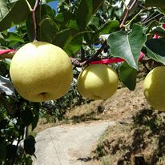
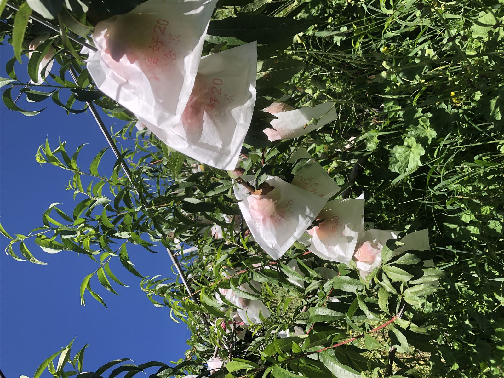

關於杰の御果園
了解我們的故事與使命
我們的故事
杰の御果園成立於2015年，由一群熱愛土地與水果的農夫所創立。創辦人黃正杰先生出身於農家，從小就在果園中長大，對於水果有著深厚的感情與專業知識。
我們的使命是將台灣最優質的水果，以最新鮮的狀態直接送到消費者手中，讓更多人能夠品嚐到真正的好水果，同時也支持台灣在地農業的永續發展。
從最初的小型果園，到如今擁有多個自有果園與合作農場，我們始終堅持「品質第一」的理念，嚴格把關每一顆出售的水果。
我們的果園

梨山梨子果園
位於海拔1800公尺的梨山，清新空氣與肥沃土壤孕育出脆嫩多汁的優質梨山梨子，每一顆都散發自然香甜。

梨山水蜜桃果園
台中市和平區梨山一帶的專業果園，陽光與山泉水澆灌出汁多味美的梨山水蜜桃，夏季限定的頂級美味。
梨山甜柿果園
梨山一帶富含礦物質的土壤培育出色澤鮮豔、香甜可口的梨山甜柿，秋季必嚐的應景水果。
我們的團隊
果園主理人
20年果樹栽培經驗 / 創辦人
擁有20年果樹栽培經驗，專精於高山水果的栽培技術與品質管理，致力於推廣台灣在地優質水果，打造頂級果園品牌。
資訊顧問
國立台灣科技大學電子工程系碩士 / 網站維護
負責杰の御果園網站的開發與維護，提供技術支援與系統優化，確保線上購物平台穩定運作與良好的使用者體驗。